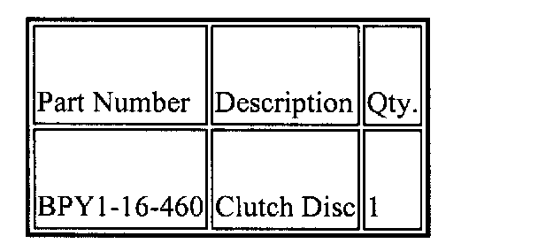
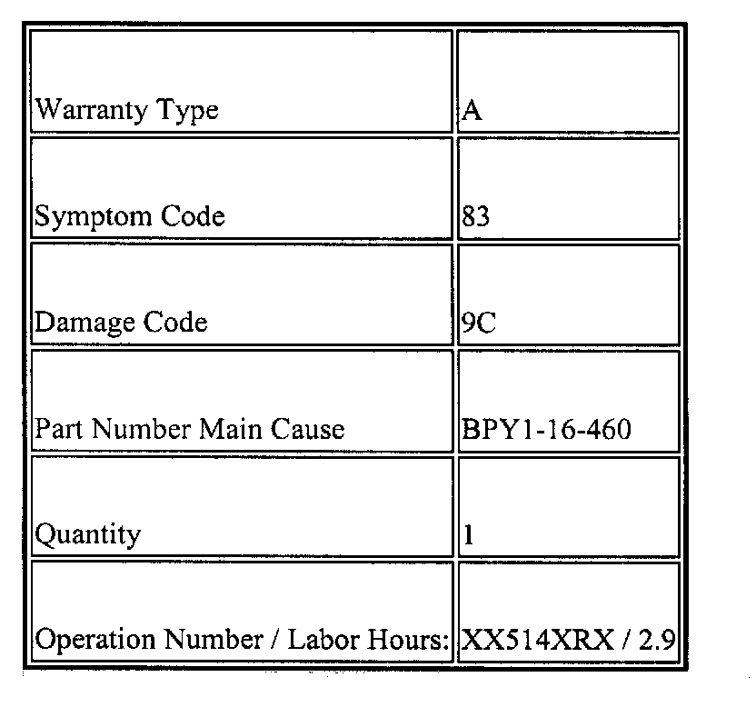

M/T - Clutch Chatter Upon Cold Take-Off
05-001/031999-2003 MIATA
CLUTCH CHATTER DURING
COLD TAKEOFF
Note:
This bulletin supersedes the following TSB(s): 05-002/02. Please update your records accordingly.
BULLETIN NOTE
The bulletin supersede 05-002/02 issued 3-18-2002. The APPLICABLE MODEL(S)/VINS, REPAIR PROCEDURE, and PART(S) INFORMATION have been updated.
APPLICABLE MODEL(S)/VINS
1999 - 2003 Miata with Manual Transmissions built prior to 4/10/2003.
Beginning VIN: JM1NB353*X0000001
Ending VIN: JM1NB353***312323
Some vehicles may exhibit clutch chatter or judder when releasing the clutch during cold conditions. This concern may be caused by the clutch surface materials creating a chatter or judder during clutch engagement. Customers experiencing this concern should have their vehicle repaired using this repair procedure.
REPAIR PROCEDURE
1. Verify the customer concern
2. Remove the manual transmission according to the following Workshop Manual procedure:
^ 5-Speed: See Workshop Manual MANUAL TRANSMISSION
REMOVAL/INSTALLATION [M15M-D](section 05-11A)
^ 6-Speed: See Workshop Manual MANUAL TRANSMISSION
REMOVAL/INSTALLATION [Y16M-D] (section 05-11B)
3. Remove clutch disc according to the Workshop Manual procedure CLUTCH UNIT REMOVAL / INSTALLATION (section 05-10)
4. Inspect the clutch cover, and flywheel according to the Workshop Manual
^ CLUTCH COVER INSPECTION (section 05-10)
^ FLYWHEEL INSPECTION (section 05-10)
5. Install clutch disc according to the Workshop Manual procedure CLUTCH UNIT REMOVAL/ INSTALLATION (section 05-10)
6. Reinstall the manual transmission according to the following Workshop Manual procedure:
^ 5-Speed: See Workshop Manual MANUAL TRANSMISSION
REMOVAL/INSTALLATION [Y15M-D] (section 05-11A)
^ 6-Speed: See Workshop Manual MANUAL TRANSMISSION
REMOVAL/INSTALLATION [Y16M-D] (section 05-11B)
7. Verify repair

PARTS INFORMATION
WARRANTY INFORMATION

NOTE:
This information applies to verified customer complaints on vehicles covered under normal warranty. Refer to the SRT microfiche for warranty term information.